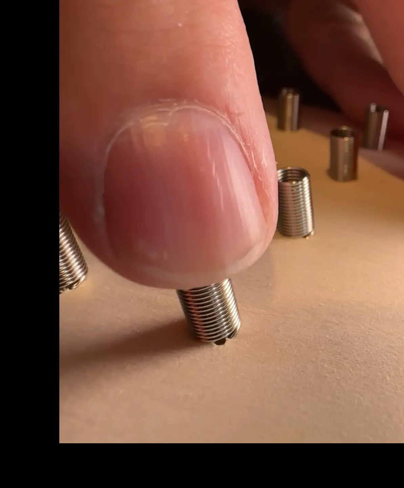

DCDarknet 13 Badge Assembly Instructions for DEFCON 32
Posted on August 06, 2024
Electronics Design Instructions
Introduction
This year's Darknet badge is a wooden Printed Circuit Board (PCB), which will let us focus more on teaching basic electronics rather than soldering. This will be similar to the Darknet badge at DEFCON 30, but will be a little easier to assemble and make changes. The goal of this badge is to teach basic electronics, rather than soldering skills.
By using a wooden badge and supplying you with the parts, we're giving you the freedom and know-how to design your own circuit, your own custom badge.
Springs
We are using springs on this badge in place of solder. The goal of solder is to attach components to a circuit board with an electical connection. Not only is solder used for a structural connection, it also allows electricity to flow through it into the components. In our case, we are using the springs to connect the components to the board along with creaing an electrical connection.
-
Anatomy of a spring
While a spring has multiple parts, we are mainly dealing with the pitch of the spring, which is the space between the coils of the spring. Since we have extension springs, rather than compression springs, we will have to temporarily generate a pitch by applying pressure to the spring.

-
Bending the springs
Placing a finger on top of the spring, apply a sideways pressure to the spring. Pushing the top of the spring to the side and down will cause the pitch to open up between the spring coils.

-
Pulling the springs
Grabbing the top of the spring with your fingers, pull up on the spring. Pulling straight up on the spring will cause the pitch to open up between the spring coils.
-
Insert a component (Stabbing)
When the pitch of the spring is large enough, you can try to push the tip of the component leg into the pitch. It is recommended that push the component leg all the way through the spring, this will 2 points of contact on the spring, and give you a both a stronger electrical and mechanical connection.
-
Insert a component (Sliding)
When the pitch of the spring is large enough, hold onto the component itself and use the leg as a saw, moving back and forth until the leg slides between the spring coils. Once again, be sure to have the leg go all the way through the spring, so that there are 2 points of contact between the component and the spring.
-
Multiple comonents on the same spring
Each spring should have at least 2 components attached to it. When attaching multiple components to a spring, be sure to insert the component legs into different pitches. Meaning that you want to have at least 1 coil between each component on the spring. If the components are in the same pitch, then the connection could be weak for one or all of the components. A single coil between the components is enough that both components should have a good connection.
Lanyards
It is up to you how to carry your badge. We are supplying lanyards for you to use, and we have conveniently, possibly inconveniently pre-drilled holes into the badge for the lanyards.
-
Attaching Lanyards
Hold the board with the springs facing up, hold the lanyard clip with the hook part pointing up and the flat tab facing the board. Line the tip of the hook up with the hole on the board that you choose to use, and then press the board against the tab on the lanyard. You will be using the board to press the tab on the hook in and just slide the hook through the hole.
Battery Pack
The battery packs are how we supply power to the badges. You will be able to attach the battery pack however and whereever you would like using double sided tape. One caveat; you need to pay attention to where the power switch is on the battery pack so that you can turn it on and off. Be sure to attach the battery pack where the wires are able to reach your positive and negative springs.
It is recommended to attach the double sided tape to the side of the battery pack with the power switch, and then attach the battery pack to the board. The reason for this, is the side without the switch is the lid, and if you just attach the lid to the badge, then there is a greater chance that the weight of the batteries will cause the lid to detach from the battery pack, and the battery pack will fall.
Ammonium Chloride
We are using ammonium chloride to decorate the wooden badges. By mixing ammonium chloride with water, or a thickening agent like glycerin or cornstarch, we create a liquid or a gel that can be painted onto the badge. You can use the paint brushes and dip them into the ammonium chloride and paint whatever design you would like on your badge.
-
Before using the ammonium chloride, please note the location of the eye wash station, put on the supplied safety glasses, and put on the provided nitrile gloves. While it is generally safe to use, you probably don't want to get it in your eyes, and definitely do not eat or drink it.
-
Using one of the supplied paint brushes, dip the tip into the ammonium chloride solution of your choosing (liquid or gel). Then paint a small amount onto your board in whatever design you would like.
 connecting in serial to a 120 Ω resistor (R1) that connects to the anode of an LED (D1) whose cathode then connects back to the negative of the 4.5V battery (BT1).")
You can also paint over a stencil, and remove the stencil afterwards.
-
Now you wait. You need to wait for the ammonium chloride to dry out before applying heat to the board. If you do not wait for it to dry, then it will foam white, and then burn. It still works, but it doesn't look as pretty.
-
After the ammonium chloride has dried on the board, you will use the heat gun, and turn it on high and start to slowly wave the heat gun over the spot you painted your ammonium chloride. Do not hold the heat gun on one spot for an extended period of time.
The longer that you wave the heat gun over the ammonium chloride the darker it will burn into the board.
-
Enjoy your magnificent creation